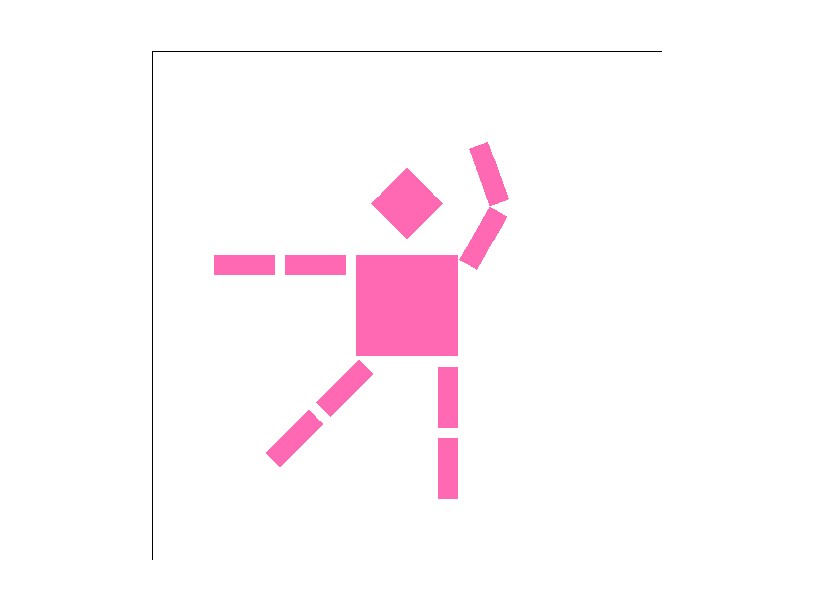
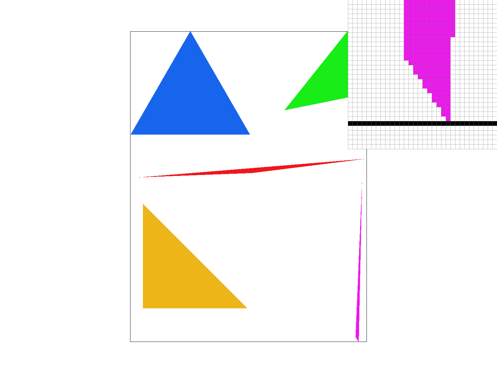
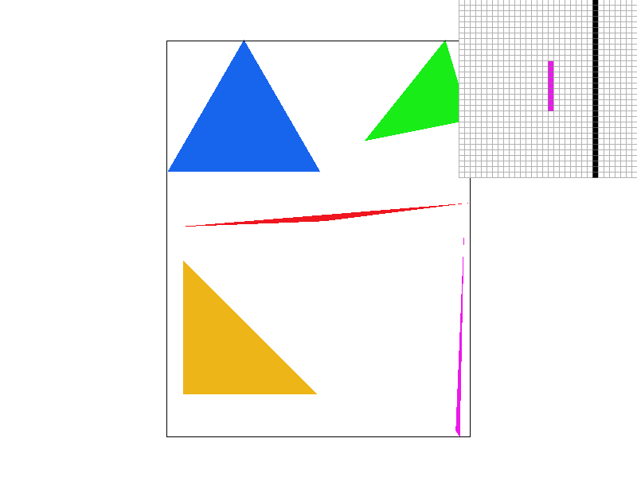
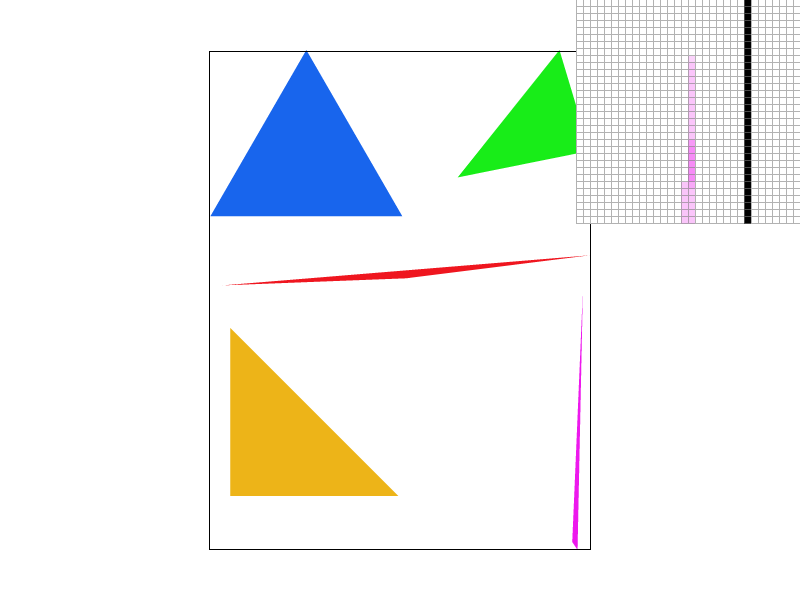
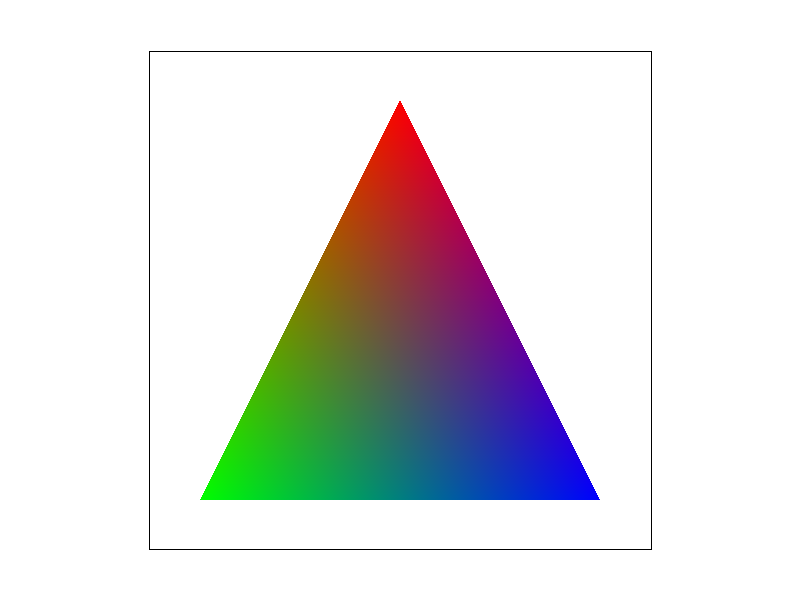
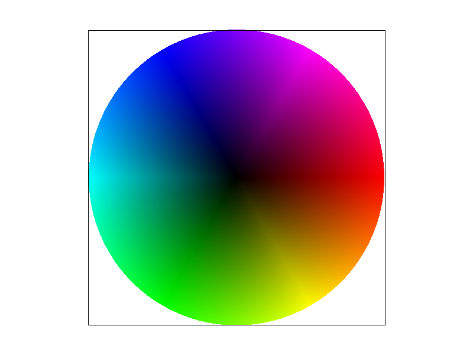
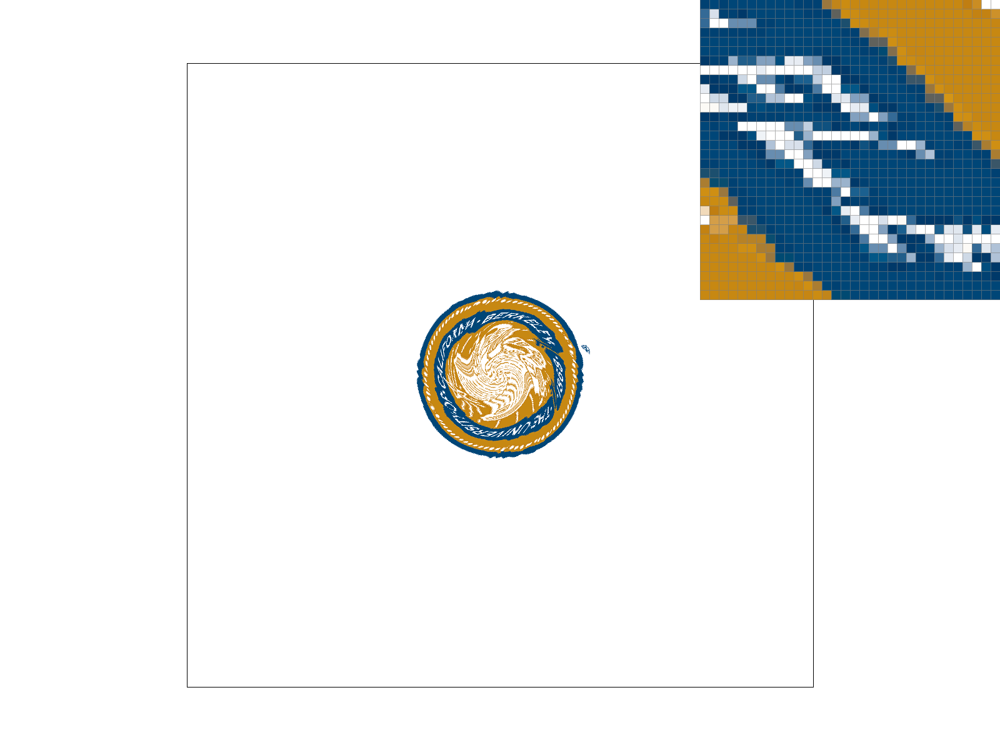
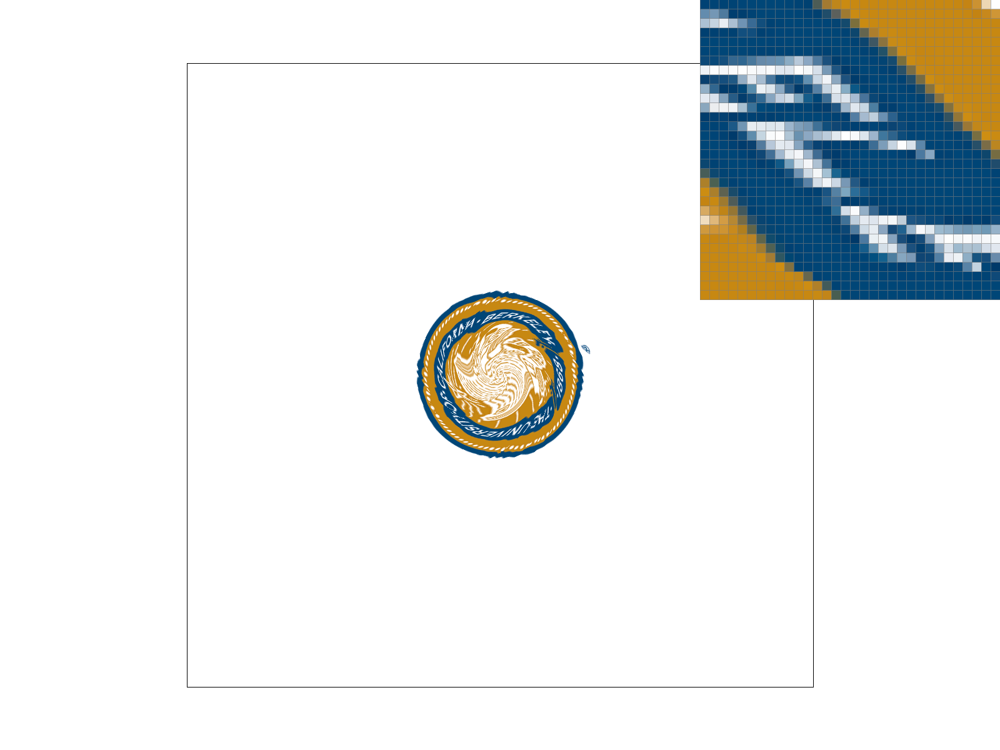
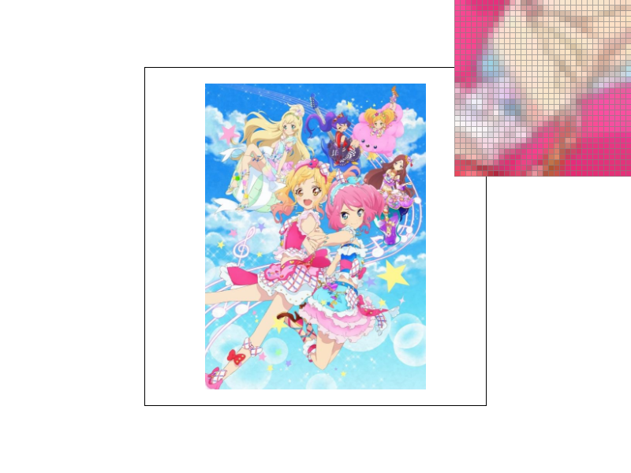

In this homework we built a rasterizer that draws SVG files. We implemented triangle rasterization, supersampling for antialiasing, transforms, color interpolation with barycentric coordinates, and texture mapping with pixel sampling and mipmaps. The main thing we learned is that most of the ugly artifacts (jaggies, thin triangles breaking up, noisy textures when they're shrunk) come from aliasing, and a lot of the assignment was different ways to fix it, each trading some speed or memory for smoother results.
Some problems we ran into: after adding supersampling, the black border in test4.svg disappeared at higher sample rates. fill_pixel was still only writing one sample per pixel, so we changed it to fill every sub-sample of the pixel. In test7.svg we also had a dotted crack along an edge shared by two triangles, because rounding error made both triangles skip samples exactly on that edge. Doing the edge math in doubles with a tiny tolerance fixed it.
First we find the triangle's bounding box by taking the min and max of the vertex x and y values, clamped to the screen. Then for every pixel in the box we test the pixel center \((x + 0.5, y + 0.5)\) against the three edges using the line test from lecture. If the point is on the inside of all three edges, we fill the pixel with the triangle's color. We divide by the triangle's signed area so it doesn't matter whether the vertices are clockwise or counterclockwise, and points exactly on an edge count as inside.
Our algorithm is no worse than checking every sample in the bounding box because that's exactly what it does. We only loop over pixels in the bounding box, and each one takes a constant amount of work.

basic/test4.svg, default settings. The pixel inspector is on the tip of the thin magenta triangle, where the edge turns into jaggies and the tip breaks apart.Supersampling is useful because one sample per pixel can't capture sharp triangle edges, so we get jaggies and thin triangles breaking apart. With more samples per pixel and averaging them, edge pixels get a color based on how much of the pixel is covered.
For sample rate \(N\), we split each pixel into a \(\sqrt{N} \times \sqrt{N}\) grid and test the center of each little square. We made sample_buffer store width * height * sample_rate colors (and fixed set_sample_rate and set_framebuffer_target to resize it that way). rasterize_triangle now does the inside test on every sub-sample and writes to that sub-sample's spot, and fill_pixel writes the same color to all sub-samples so lines and points still work. Then resolve_to_framebuffer averages each pixel's sub-samples to get the final color. That averaging is what antialiases the triangles.
 |
 |
With the pixel inspector on the skinny magenta tip, at rate 1 the tip breaks into separate pixels because it's thinner than a pixel and misses most pixel centers. At rate 4 some sub-samples hit the triangle, so those pixels turn light pink and the tip is more connected. At rate 16 the tip is a smooth line that fades out, since the coverage estimate is much more accurate.
my_robot.svg: pink cubeman mid-dance.We made cubeman pink and had him dance, with one arm straight out, the other arm bent up over his head, and one leg kicked out to the side while he balances on the other. The arms and legs are nested groups, so we rotated the upper arm around the shoulder and then rotated the forearm inside that group, which keeps it attached at the elbow. For the kicked leg we just rotated the whole leg group around the hip.
Barycentric coordinates \((\alpha, \beta, \gamma)\) describe a point inside a triangle as a weighted mix of the three vertices, where the weights add up to 1. Each weight is 1 at its own vertex and goes down to 0 at the opposite edge. You can also think of each one as the area of the small triangle across from that vertex divided by the whole triangle's area. We get them from the same edge functions as in Task 1, and then blend the vertex colors with them: \(C = \alpha C_0 + \beta C_1 + \gamma C_2\).


basic/test7.svg, default settings, sample rate 1.Pixel sampling is how we choose a texture color for a point on the screen. For each sample inside the triangle, we use the barycentric coordinates to interpolate the vertices' \((u, v)\) coordinates, scale them by the texture's width and height, and look up the color there. Since that point usually lands between texels, we need a rule for which texel(s) to use:
 |
|
 |
We put the pixel inspector on the white "BERKELEY" letters on the seal. With nearest at 1 sample per pixel, the letters look choppy and broken up, since each pixel either hits a white texel or misses it. Bilinear at 1 sample per pixel looks a lot smoother and the letters are more connected. At 16 samples per pixel both look pretty similar, because supersampling already averages out a lot of the difference. The two methods differ the most when the texture has thin, high-contrast details and it's magnified or shrunk a lot, since that's when neighboring texels are very different and nearest jumps between them.
Level sampling picks which mipmap level to read from. A mipmap is the texture plus a bunch of smaller, pre-averaged copies (each half the size of the one before). When a texture is shrunk on screen, one pixel covers lots of texels, so reading from the full-size texture aliases, and a smaller level works better. To pick the level, we also compute the \((u, v)\) at \((x+1, y)\) and \((x, y+1)\) and check how many texels we move per screen pixel. The level is \(\log_2\) of the bigger of those two. L_ZERO always uses level 0, L_NEAREST rounds to the closest level, and L_LINEAR blends the two closest levels.
For the tradeoffs: bilinear pixel sampling is a little slower than nearest (4 lookups instead of 1) but doesn't need more memory, and it helps most when textures are magnified. Mipmapping needs about 1/3 extra memory for the smaller levels and a bit of extra math per sample, but it's really good at fixing aliasing on shrunk textures, though it can make things blurrier. Supersampling antialiases the most, since it also fixes triangle edges, but it's the slowest and uses the most memory because everything scales with the sample rate.
L_ZERO + P_NEAREST |
L_ZERO + P_LINEAR |
L_NEAREST + P_NEAREST |
 L_NEAREST + P_LINEAR |
We used an Aikatsu Stars! poster and mapped it onto a warped, pillow-shaped grid like the ones in svg/texmap/, so the middle is about full size while the edges get squished. The squished edges and the thin plaid lines on the outfits show the differences best. With L_ZERO + P_NEAREST, the plaid and the squished edges look jaggy and noisy because every pixel reads one texel from the full-size image. P_LINEAR softens it a little. L_NEAREST reads from smaller levels where the image is squished, so those parts look less noisy but a bit blurrier. L_NEAREST + P_LINEAR looks the smoothest overall.